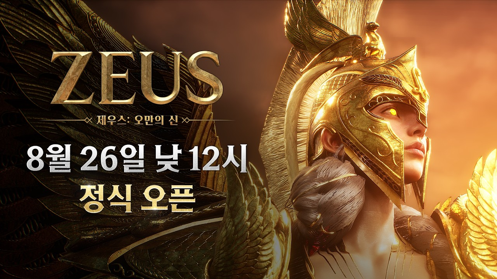
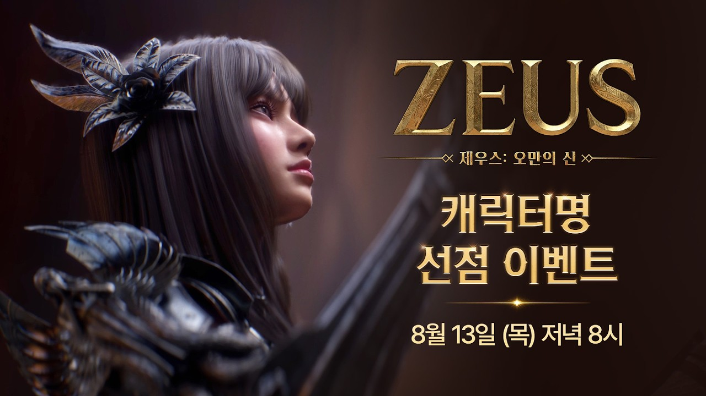

제우스: 오만의 신 MMORPG 기대작 정식 오픈, 초반 튜토리얼부터 엘리멘탈리스트 육성까지
2026년 8월 26일 낮 12시, 컴투스와 에이버튼이 함께 만든 신작 MMORPG 기대작 「제우스: 오만의 신」이 정식 오픈했습니다. 그리스 신화를 배경으로 한 세계관에, 워리어·로그·메이지·파라곤 4대 클래스가 각각 두 갈래로 갈리는 8종 클래스 구조를 내세운 작품인데요. 예전에 쇼케이스 소식을 전해드렸던(제우스: 오만의 신 쇼케이스 임박 디렉터스 인사이트 내용 정리 MMORPG 신작) 그 게임이 드디어 문을 연 거라, 오늘은 정식 오픈 초반에 챙겨두면 좋을 것들이랑 엘리멘탈리스트 육성 방향, 인게임 시스템까지 한 번에 정리해 드릴게요.
요즘 mmorpg 신작 가뭄이다 싶으셨던 분들껜 특히 반가운 타이밍이지 싶은데요, 출시일 확정 소식이나 사전예약 특전 세부 내용은 위에 링크해둔 글에 이미 정리해뒀으니 그쪽 참고하시고, 이 글에서는 안 겹치게 초반 시스템 위주로 풀어볼게요.

공식 유튜브에 올라온 정식 출시 PV 한 장면이에요.
이미지 출처: 제우스: 오만의 신 공식 유튜브 · 네이버 본문엔 받아서 재업로드 권장
제우스: 오만의 신, 정식 오픈 초반에 뭐부터 챙기나
정식 오픈 초반엔 사전예약·오픈 기념 보상이랑 AI 모드, 시련의 틈 같은 편의 시스템부터 확인해두는 게 순서예요. 사전예약은 참여한 채널별로 보상이 나뉘어 있어서 하나씩 짚어볼게요.
- 스토어(마켓) 사전예약 — 희귀 등급 탈것 확정 소환 + 강화 주문서 3종 각 10장
- 홈페이지(휴대폰번호) 사전예약 — 공식 홈페이지에서 고급 등급 탈것 소환권 1개 + 에테리온 결정 1개
- 공식 채널(유튜브·카카오톡) 구독 — 유튜브·카카오톡 채널 구독 시 골드 100만 + 공격·방어 영약 각 12개, 에테르 비약 40개
참고로 캐릭터명 선점 이벤트도 8월 13일에 미리 진행됐다고 하더라고요. 지금은 지난 이벤트라 참여는 못 하지만, 이런 것도 있었구나 하고 알아두시면 좋을 것 같아요.

공식 유튜브에 올라온 캐릭터명 선점 이벤트 안내 영상 한 장면이에요.
이미지 출처: 제우스: 오만의 신 공식 유튜브 · 네이버 본문엔 받아서 재업로드 권장
편의 시스템도 초반부터 눈에 띄네요. 접속하지 않은 시간에도 설정해둔 방식대로 자동 사냥·성장을 진행해주는 AI 모드가 있고, 오프라인 캐릭터도 길드 레이드 같은 콘텐츠에 참여시킬 수 있는 '징집' 기능이 딸려 있다고 해요. 반대로 직접 조작하며 몰입하고 싶은 유저를 위한 시련의 틈도 따로 있어서, 자동·수동을 취향껏 오갈 수 있는 구조예요.
AI 모드랑 시련의 틈, 인게임에서 직접 캡처해 넣으면 좋을 자리예요.
본격적인 클래스 이야기에 들어가기 전에, 우선 8종 클래스를 쭉 훑어볼게요.
플레이 가능한 클래스는 몇 종류나 되나
제우스: 오만의 신은 워리어·로그·메이지·파라곤 4대 클래스가 각각 두 갈래로 나뉘어 총 8종 클래스를 플레이할 수 있어요.
| 기반 클래스 | 전직 | 한 줄 특징 |
|---|---|---|
| 워리어 | 나이트 | 강철의 신념과 맹세로 아군을 지키는 수호자 |
| 워리어 | 버서커 | 대검을 휘둘러 적의 진형을 파괴 |
| 로그 | 어쌔신 | 쌍검과 은신으로 적을 단숨에 암살 |
| 로그 | 레인저 | 예리한 활 끝으로 숨은 적을 꿰뚫음 |
| 메이지 | 엘리멘탈리스트 | 지팡이에 깃든 얼음과 불의 권능으로 전장을 지배 |
| 메이지 | 오라클 | 오브의 빛으로 아군을 치유·정화 |
| 파라곤 | 블레스드 | 축복받은 철퇴와 방패로 적을 심판 |
| 파라곤 | 아티산 | 금빛 행운으로 아군 능력 극대화(경제·생산 특화) |
이 중 이번 글에서 집중해서 살펴볼 클래스는 메이지 계열의 엘리멘탈리스트예요.
엘리멘탈리스트는 어떤 클래스인가
엘리멘탈리스트는 지팡이 하나로 얼음과 불 속성을 오가며 전장을 지배하는 메이지 계열 클래스예요. 공식 소개 문구만 보면 광역 제어랑 딜링을 동시에 노리는 타입으로 보이는데요, 얼음으로 묶고 불로 몰아치는 운용이 기대되는 클래스라 마법사 계열 좋아하시는 분들껜 눈여겨볼 만해 보여요. 같은 메이지 계열인 오라클이 회복·정화에 특화된 것과 비교하면, 엘리멘탈리스트 쪽이 공격적인 포지션에 더 가깝다고 봐도 무리는 없을 것 같습니다.
엘리멘탈리스트 스킬 연출, 인게임 캡처로 채워 넣으면 좋을 자리예요.
육성은 뭐 위주로 하면 되나
초반 육성은 강화 주문서로 장비를 다지고, AI 모드로 기본 성장을 돌리면서, 거래소·미다스의 금고로 경제적 여유를 챙기는 3박자가 기본이에요.
- 무기·방어구·장신구 강화 주문서로 장비 성능 올리기
- AI 모드 자동 사냥으로 접속 안 해도 경험치·재화 누적
- 인터서버 통합 거래소로 아이템 매매하고, 미다스의 금고에 장비를 넘겨 다이아로 바꾸기
- 아티산의 제작 활동과 맞물려 경제 흐름 전체가 하나로 연결되는 구조
엘리멘탈리스트라면 사전예약으로 받은 강화 주문서를 무기, 그러니까 지팡이 쪽에 먼저 몰아주는 쪽이 무난해 보여요. 메이지 계열은 원래 스킬 딜 비중이 크잖아요, 방어구·장신구보다 무기 강화 우선순위를 높게 잡는 게 초반 성장 체감에 유리할 것 같습니다.
거래소랑 미다스의 금고, 인게임에서 캡처해 채워두면 좋아요.
경쟁 콘텐츠 오디세이아는 뭔가
오디세이아는 개인전부터 길드 단위까지 아우르는 제우스: 오만의 신의 시즌제 경쟁 콘텐츠예요. 경쟁이라고 해서 실력 좋은 유저만 파고들 수 있는 구조는 아니고, 성향에 맞는 콘텐츠를 골라 즐길 수 있게 다양하게 갈라져 있다고 해요. 다만 전부 한꺼번에 열리는 게 아니라 순차적으로 오픈되는 방식이거든요. 일정도 같이 챙겨두면 좋아요.
- 무한의 탑 — 층을 오르는 개인 PvE 콘텐츠(정식 오픈 시점부터 참여 가능)
- 길드 레이드 — 길드 단위 협동 PvE, AI 모드 '징집'으로 오프라인 캐릭터도 기여 가능(정식 오픈 시점부터 참여 가능)
- 콜로세움 — 페르소나(AI) 상대 1:1 대결이라 실시간 대전 부담이 적은 편(오픈 2주차부터 개방)
- 아카디아 제전 — 길드 단위 축제형 콘텐츠(순차 오픈 예정)
- 시련의 전당 — 별도의 도전형 콘텐츠(오픈 1개월차부터)
오픈 첫 주엔 무한의 탑·길드 레이드부터, 2주차엔 콜로세움까지 순서대로 즐기면 되니 조급해하지 않아도 괜찮아 보여요.
오디세이아 콘텐츠 목록, 인게임에서 캡처해두면 좋을 자리예요.
자주 묻는 질문
Q. 쿠폰은 어디서 등록하나요?
공식 쿠폰 등록 페이지(coupon.withhive.com/2352)에서 등록할 수 있어요. 코드는 시기마다 바뀔 수 있으니 최신 코드는 공식 채널에서 바로 확인하시는 걸 추천드려요.
Q. 엘리멘탈리스트는 무소과금으로도 할 만한가요?
장비 강화랑 AI 모드 자동 성장을 잘 챙기면 큰 무리 없이 따라갈 수 있어 보여요.
Q. 오디세이아는 정식 오픈 시점부터 바로 참여할 수 있나요?
콘텐츠별로 순차 오픈되는 방식이라 한 번에 다 열리진 않아요. 무한의 탑·길드 레이드는 바로, 콜로세움은 2주차, 아카디아 제전·시련의 전당은 그 이후 순차 오픈이라고 안내돼 있으니 일정 체크해가며 하나씩 즐기면 될 것 같습니다.
제우스: 오만의 신 정리
정리하면, 제우스: 오만의 신은 8종 클래스로 취향껏 골라 키울 수 있고, 그중 엘리멘탈리스트는 얼음과 불을 오가는 화려한 마법사 포지션이 매력 포인트예요. 강화·AI 모드·거래소로 이어지는 성장 구조에 오디세이아라는 다양한 경쟁 콘텐츠까지 갖췄으니, PvP든 PvE든 자기 방식대로 즐길 수 있는 mmorpg 기대작인 건 분명해 보입니다. 공식 홈페이지(zeus.com2us.com)·유튜브 채널(@ZEUS_mmorpg)·카카오톡 채널을 구독해두면 이벤트·업데이트 소식을 놓치지 않을 수 있으니 함께 챙겨두시고, 엘리멘탈리스트 쪽으로 마음이 기우신다면 한 번쯤 시작해보셔도 좋을 것 같습니다.
✔ 제우스: 오만의 신 같이 보기 좋은 내용
· 제우스: 오만의 신 쇼케이스 임박 디렉터스 인사이트 내용 정리 MMORPG 신작
참고한 곳
· 제우스: 오만의 신 공식 홈페이지
· 공식 클래스 소개 페이지 (2026.08.27 기준)